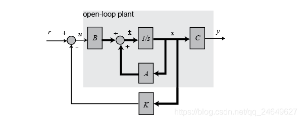
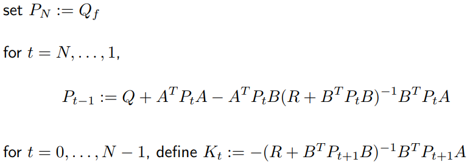
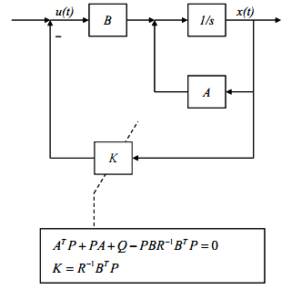

LQR (linear quadratic regulator)即线性二次型调节器，其对象是现代控制理论中以状态空间形式给出的线性系统，而目标函数为对象状态和控制输入的二次型函数。LQR最优设计是指设计出的状态反馈控制器 K要使二次型目标函数J 取最小值，而 K由权矩阵Q 与 R 唯一决定，故此 Q、 R 的选择尤为重要。LQR理论是现代控制理论中发展最早也最为成熟的一种状态空间设计法。特别可贵的是，LQR可得到状态线性反馈的最优控制规律，易于构成闭环最优控制。
假设有一个线性系统能用状态向量的形式表示:
\(\begin{aligned}
\dot{x} = Ax + Bu \qquad(1)
\end{aligned}\)
其中$x(t)\in R^n, u(t)\in R^m$,其中x为状态变量可观测，u为控制矩阵。
全状态反馈控制系统如下所示：

状态反馈控制器为： \(\begin{aligned} u = -Kx \end{aligned}\) 使得闭环系统能够满足我们期望的性能。我们把这种控制代入$(1)$得到: \(\begin{aligned} \dot{x} = (A - BK)x = A_cx\qquad(2) \end{aligned}\) 对于$(1)$式的开环系统，由现代控制理论我们知道开环传递函数的极点就是系统矩阵A的特征值。现在变成了$(2)$的闭环形式，状态变换矩阵$A$变成了$(A-BK)$。因此通过配置反馈矩阵$K$，可以使得闭环系统的极点达到我们期望的状态.
LQR的目标(损失，能量)函数一般设计如下： \(\begin{aligned} J = \dfrac{1}{2}\int^{\infty}_0(x^TQx + u^TRu)dt \qquad(3) \end{aligned}\) 其中$Q,R$通常取为对角阵，$Q$为半正定的状态加权矩阵, $R$为正定的控制加权矩阵.
为什么能量函数(或称系统的目标函数)得设计成这个样子呢？
1
2
3
首先假设状态向量x(t)是1维的，那么其实就是一个平方项 Qx^2 >= 0，同理. 能量函数J要最小，那么状态向量x(t)，u(t)都得小。
J最小，那肯定是个有界的函数，我们能推断当t趋于无穷时，状态向量x(t)将趋于0，这也保证了闭环系统的稳定性。
那输入u(t)要小是什么意思呢？它意味着我们用最小的控制代价得到最优的控制。譬如控制电机，输入PWM小，将节省能量。
矩阵Q,R的选取?
1
2
3
4
5
𝑄矩阵元素变大意味着希望跟踪偏差能够快速趋近于零
𝑅矩阵元素变大意味着希望控制输入能够尽可能小
一般来说，Q值选得大意味着，要使得J小，那x(t)需要更小，也就是意味着闭环系统的矩阵(A-BK)的特征值处于S平面左边更远的地方，这样状态x(t)就以更快的速度衰减到0。
另一方面，大的R表示更加关注输入变量u(t),u(t)的减小，意味着状态衰减将变慢。
同时，Q为半正定矩阵意味着他的特征值非负，R为正定矩阵意味着它的特征值为正数。如果你选择Q,R都是对角矩阵的话，那么Q的对角元素为正数，允许出现几个0.R的对角元素只能是正数。
将$u = -Kx$代入$(3)$得到：
\(\begin{aligned}
J = \dfrac{1}{2}\int^{\infty}_0 x^T(Q + K^TRK)x\quad dt \qquad(4)
\end{aligned}\)
为了找到K,我们先不防假设存在一个常量矩阵P使得：
\(\begin{aligned}
\dfrac{d}{dt}(x^TPx) = -x^T(Q + K^TRK) \qquad(5)
\end{aligned}\)
带入$(4)$得:
\(\begin{aligned}
J = \dfrac{1}{2}\int^{\infty}_0 \dfrac{d}{dt}(x^TPx)dt = \dfrac{1}{2}x^T(0)Px(0) \qquad(6)
\end{aligned}\)
注意，我们已经假设闭环系统是稳定的，也就是t趋于无穷时，x(t)趋于0.
现在把(5)式左边的微分展开，并把状态变量x的微分用(2)式替代得到：
\(\begin{aligned}
\dot{x}^TPx + x^TP\dot{x} + x^TQx + x^TK^TRKx = 0 \\
x^TA^T_cPx + x^TPA_cx + x^TQx + x^TK^TRKx = 0 \\
x^T(A^T_cP + PA_c + Q + K^TRK)x = 0
\end{aligned}\)
这个式子要始终成立的话，括号里的项必须恒等于0.
\(\begin{aligned}
(A-BK)^TP + P(A-BK) + Q + K^TRK = 0 \\
A^TP - K^TB^TP + PA - PBK + Q + K^TRK = 0
\end{aligned}\)
取$K=R^{-1}B^TP$带入得：
\(\begin{aligned}
A^TP + PA + Q + (R^{-1}B^TP)^TR(R^{-1}B^TP) - (R^{-1}B^TP)^TB^TP - PB(R^{-1}B^TP) &= 0 \\
A^TP + PA + Q - PBR^{-1}B^TP &= 0 \qquad(7)
\end{aligned}\)
K的二次项没有了，可K的取值和P有关，而P是我们假设的一个量，P只要使得的(7)式成立就行了。而(6)式在现代控制理论中极其重要，它就是有名的Riccati方程。
一般采用迭代方式解此方程，如下图所示：

选择参数矩阵Q,R
求解Riccati 方程得到矩阵P
计算$K=R^{-1}B^TP$
计算$u = -Kx$的到控制量

输入A B Q R矩阵计算K
1
2
3
4
5
6
7
8
9
10
11
12
13
14
15
16
17
18
19
20
21
22
23
24
25
26
27
28
29
30
31
32
33
34
35
36
37
38
import scipy.linalg as la
import numpy as np
def solve_DARE(A, B, Q, R):
"""
solve a discrete time_Algebraic Riccati equation (DARE)
"""
X = Q
maxiter = 150
eps = 0.01
for i in range(maxiter):
Xn = A.T @ X @ A - A.T @ X @ B @ \
la.inv(R + B.T @ X @ B) @ B.T @ X @ A + Q
if (abs(Xn - X)).max() < eps:
break
X = Xn
return Xn
def dlqr(A, B, Q, R):
"""Solve the discrete time lqr controller.
x[k+1] = A x[k] + B u[k]
cost = sum x[k].T*Q*x[k] + u[k].T*R*u[k]
# ref Bertsekas, p.151
"""
# first, try to solve the ricatti equation
X = solve_DARE(A, B, Q, R)
# compute the LQR gain
K = la.inv(B.T @ X @ B + R) @ (B.T @ X @ A)
eigVals, eigVecs = la.eig(A - B @ K)
return K, X, eigVals